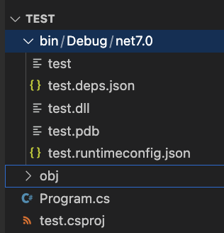
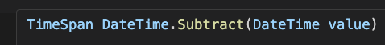
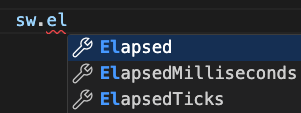
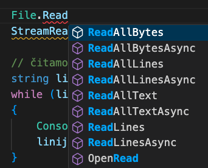

Strukture podataka i algoritmi sortiranja u C#
U ovom dijelu ćemo implementirati vlastitu strukturu podataka koristeći niz te primijeniti osnovne algoritme sortiranja u obliku metoda koje će biti dio te klase. Moramo se podsjetiti kako pristupamo članovima klase dok pišemo kod u tijelu klase i u nekom drugom dijelu programa.
Temeljni pojmovi
- 📌 Imenski prostori (eng. namespace) i korištenje using direktive.
- 📌 Klase u C# – Definiranje i implementacija klase s poljima.
- 📌 Nizovi (eng. arrays) – Pohrana podataka u niz.
- 📌 Metode za dodavanje, ispis, uređivanje.
- 📌 Algoritmi sortiranja (primjeri bubble sort, selection sort, insertion sort)
- 📌 Mjerenje vremena izvođenja (DateTime, Stopwatch, TimeSpan)
- 📌 Rad s datotekama – Učitavanje i spremanje podataka iz/u tekstualnu datoteku.
Imenski prostori
Imenske prostore (eng. namespace) koristimo kako bi organizirali kôd te izbjegli potencijalne konflikte između naziva (ili imena) klasa, pogotovo u složenim projektima, gdje različite klase ili metode mogu imati iste nazive. Npr. možete imati klasu s nazivom List u jednom imenskom prostoru, a potpuno drugačiju klasu List u drugom.
Pomoću imenskih prostora možemo grupirati međusobno povezane klase i metode u logične cjeline (povećavamo preglednost kôda). Ako koristimo imenske prostore, odmah je jasno iz kojeg dijela dolazi određena klasa ili metoda.
Na početku svakog C# programa ćete najčešće vidjeti liniju:
using System;
Taj redak omogućava nam korištenje svih klasa unutar System imenskog prostora, poput Console, bez potrebe da svaki put pišemo System.Console. To je imenski prostor koji već postoji u bibliotekama kôda. Ako pišemo vlastiti imenski prostor, onda navodimo sljedeće:
namespace StrukturaPodataka
{
class MojPopis
{
// Tijelo klase
}
}
Ako u nekom drugom projektu želimo koristiti već definiranu klasu iz imenskog prostora StrukturaPodataka onda jednostavno dodamo postojeću cs datoteku u novi projekt te u novom projektu pišemo:
StrukturaPodataka.MojPopis a = new StrukturaPodataka.MojPopis();
jer novi projekt nema isti naziv imenskog prostora.
Ako koristimo using StrukturaPodataka;, onda je dovoljno pisati:
MojPopis a = new MojPopis();
Na prvi pogled se taj postupak čini jednostavnim, ali u praksi nije. Naime, ako ćemo koristiti tu novu strukturu u više projekata, onda svaki put moramo mijenjati "originalnu" cs datoteku. Kao što se inače događa s programskom podrškom... što ako napravimo izmjene u toj strukturi? U tom slučaju, umjesto jednostavnog dodavanja nove cs datoteke, za svaki projekt moramo raditi usklađivanje naziva.
Imenski prostori su ključni alat za upravljanje velikim i složenim projektima te osiguravaju urednu organizaciju i smanjenje mogućih problema s nazivima.
Klase
Klase imaju svoje članove (eng. members):
- Polja (eng. fields)
- Svojstva (eng. properties)
- Metode
- Konstruktore
Svi članovi klase mogu biti označeni modifikatorima pristupa:
- private - dostupni samo unutar klase
- public - neograničen pristup (dostupno svima koji vide klasu)
- protected - ograničeno na klase koje nasljeđuju
- internal - slično kao public, ali pristup je ograničen samo na trenutni skup biblioteka (assembly)
Posebna vrsta modifikatora koja se može koristiti u kombinaciji s gore navedenima:
- static - predstavljaju statičkog člana koji pripada klasi, a ne objektu.
Na ovom kolegiju nećemo koristiti protected jer je usko vezan uz koncept nasljeđivanja koji se detaljnije obrađuje kasnije. Za ostalo je prilično jednostavno, ako nam treba nešto sakriti (zaštititi), onda koristimo private, a ako želimo omogućiti dostupnost (vidljivost) van klase onda koristimo public.
Ako nam treba "finija" kontrola nad nekim poljem, npr. treba nam podatak koji je samo za čitanje (eng. read-only) kao što je to primjerice Length za niz, onda ćemo tu namjenu koristiti svojstvo. Naime, svojstvo se sastoji od dva dijela:
- dohvaćanja/čitanja spremljenog podatka (get) i
- spremanja/postavljanja podataka (set)
U svakom od ta dva navedena dijela možemo pisati dodatni kôd kojim kontroliramo pristup. Na primjer, ako korisnik pokuša upisati prazan string za ime, može se javiti iznimka (greška) ili se može spremiti tekst "nepoznato" i sl.
Što je s internal? Pojednostavljeno, jako je sličan public tako da ga nećemo koristiti. Za potrebe izrade projekata na ovom kolegiju, zapravo niti nema razlike. Članovi označeni s internal su javno dostupni svima ostalima unutar jednog assembly.
Ovdje smo ostavili engleski naziv jer je malo teže (ili nespretnije) prevesti taj pojam. Podrazumijeva fizičku jedinicu kôda koja sadrži sve što je potrebno kako bi se određeni dio programa izvršio (klase, metode itd.) te informacije (metapodatke) koje su potrebne kako bi sve funkcioniralo (verzije, resursi, sigurnosne informacije i sl.). Dijeli se na izvršne exe datoteke i dll datoteke s bibliotekama kôda. Kad napravite složenije projekte, onda se vaša aplikacija može sastojati od više takvih assembly-ja.
Svaki assembly može sadržavati više imenskih prostora. Primjerice, kad instalirate neki program (aplikaciju) na vaše računalo, taj program se sastoji od jedne više exe i dll datoteka koje su različiti assembly-ji.
Kad kompajlirate vaš projekt, također se generiraju dll datoteke (1 ili više, ovisno o tome što koristite).

Dakle, assembly možemo zamisliti kao paket koji sadrži sve potrebne dijelove za rad aplikacije.
Prije nego što krenemo s implementacijom, napravit ćemo pregled načina na koje možemo mjeriti vrijeme izvođenja nekog programa. Mjerenje vremena izvođenja programa je važno jer nam pomaže razumjeti koliko je naš kôd učinkovit. U svijetu programiranja, učinkovitost je ključna jer se ne radi samo o tome da program radi, nego i o tome koliko brzo i s koliko resursa se izvršava.
Neki algoritmi mogu riješiti isti problem na različite načine, ali s vrlo različitim brzinama. Mjerenjem vremena izvođenja možemo odabrati najbrži algoritam ili pristup za određeni zadatak. Na primjer, BubbleSort je u određenim situacijama sporiji od drugih algoritama, pa je važno znati koliko je vremena potrebno različitim algoritmima na različitim skupovima i vrstama podataka. S povećanjem količine podataka, neki algoritmi postaju značajno sporiji.
Ne smijemo zaboraviti i iskustvo korisnika. Ako program dugo izvršava neki zadatak, korisnici mogu postati frustrirani ili ga čak prestati koristiti.
Kad spominjemo učinkovite programe koji se temelje na pažljivo odabranim strukturama podataka i algoritmima, onda ne smijemo zaboraviti kako pored vremena izvođenja "troše" i radnu memoriju te samim tim i dodatne resurse. Prema tome, važno je znati što i kako implementirati kako bi smanjili troškove.
Ovdje ćemo se osvrnuti detaljnije samo na vrijeme jer nam je to jednostavno.
Načine mjerenja (za potrebe učenja i nastave) možemo podijeliti na:
- Mjerenje s DateTime - jednostavno oduzimanje vremena početka i kraja,
- Primjena klase Stopwatch - preciznije mjerenje od prethodnog ,
- Mjerenje vremena izvršavanja procesa - primjena TimeSpan i Process.
TimeSpan predstavlja određeni vremenski period izražen u obliku pozitivnih ili negativnih brojeva dana, sati, minuta, sekundi i dijelova sekunde. Vrijednost TimeSpan objekta predstavljena je kao:
- [-]d.hh:mm:ss.ff (predznak je opcionalan, d označava broj dana, hh broj sati, mm broj minuta, ss broj sekundi, a ff dijelove sekunde),
- broj otkucaja (eng. ticks) u nekom vremenskom intervalu, a jedan „tick" za TimeSpan odgovara 100 nanosekundi.
Prije dijela kôda za kojeg želimo izmjeriti vrijeme pišemo:
Program.cs
using System;
namespace test; // novi način pisanja za namespace
class Program
{
static void Main(string[] args)
{
// deklariramo varijablu
DateTime pocetak;
pocetak = DateTime.Now;
// dio programa kojeg mjerimo
Console.WriteLine("Hello, World!");
// kraj mjerenja
TimeSpan kraj = DateTime.Now.Subtract(pocetak);
Console.WriteLine("Vrijeme: " + kraj);
}
}
Primijetite kako ne moramo posebno izdvajati sekunde, minute itd. već postoji metoda Subtract() kojom možemo jednostavno obaviti računanje. Ako zadržimo strelicu miša na metodi, VS Code će nam dati neke informacije (isječak na slici):

Vidimo kako metoda Subtract() prima vrijednost tipa DateTime, a vraća vrijednost tipa TimeSpan.
Nakon pokretanja programa, ispisat će se poruka slična ovoj:
Hello, World!
Vrijeme: 00:00:00.0514960
Ako više puta pokrenete program, primijetit ćete i kako se vrijeme izvođenja razlikuje iako nismo mijenjali program.
Stopwatch klasa u C#-u omogućuje preciznije mjerenje vremena koje je proteklo između dvije točke u vašem programu. To je klasa iz System.Diagnostics imenskog prostora koja koristi unutarnji sat procesora za točno praćenje vremena, pa je korisna za mjerenje performansi algoritama i dijelova koda.
Za razliku od jednostavnog korištenja DateTime objekta, Stopwatch pruža precizniji pristup jer je ta klasa oblikovana upravo za mjerenje vremena izvođenja.
Korištenje Stopwatch klase je vrlo jednostavno, a slijedi ovaj osnovni pristup:
Program.cs
using System;
using System.Diagnostics;
namespace test;
class Program
{
static void Main(string[] args)
{
// Inicijalizacija Stopwatch instance
Stopwatch sw = new Stopwatch();
// Pokretanje mjerenja vremena
sw.Start();
// Kod čije vrijeme izvođenja želimo mjeriti
for (int i = 0; i < 1000000; i++)
{
// Simulacija operacije
}
// Zaustavljanje mjerenja vremena
sw.Stop();
// Ispis proteklog vremena
Console.WriteLine("Vrijeme: " + sw.Elapsed);
Console.WriteLine("MS: " + sw.ElapsedMilliseconds + " ms");
Console.WriteLine("Ticks: " + sw.ElapsedTicks + " ticks");
}
}
Izlaz
Vrijeme: 00:00:00.0025961
MS: 2 ms
Ticks: 2664403 ticks
Broj otkucaja (ticks) ovisi o računalu i operacijskom sustavu tako da neće biti isti na različitim računalima.
Kao što možete primijetiti u VS Code-u, objekt sw iz gornjeg primjera ima svojstva:

Prepoznajemo ih po specifičnoj "ikonici".
Klasa Stopwatch ima metode:
- Start() - pokreće brojač,
- Stop() - zaustavlja brojač,
- Reset() - postavlja brojač na 0,
- Restart() - kombinira Reset() i Start() - postavlja brojač na 0 i ponovo pokreće mjerenje (ako je već bilo pokrenuto, zaustavit će ga prije postavljanja na 0).
Problem smeća u memoriji
Kada mjerimo vrijeme izvođenja programa, važno je razumjeti kako C# upravlja memorijom jer to može značajno utjecati na performanse. U C#-u, memorija se koristi na dva glavna načina: kroz stog (stack) i gomilu (heap). Ovi pojmovi su ključni za razumijevanje kako se program ponaša u pogledu resursa te zašto je važno mjeriti i optimizirati vrijeme izvođenja.
C# dijeli podatke na dvije glavne vrste:
- referentni tipovi - uključuju stringove, nizove, instance klasa, itd.
- vrijednosni tipovi - uključuju jednostavne numeričke tipove, stringove, bool i sl.
Kada koristimo referentni tip, konkretni podaci (ili objekt) se pohranjuju na gomilu (heap), dok se referenca na te podatke čuva na stogu (stack). S druge strane, sadržaj vrijednosnih tipova se izravno sprema na stogu jer sadrže stvarnu vrijednost, a ne samo referencu.
Kad metoda završi, sve varijable koje su se tu nalazile se automatski brišu iz radne memorije koja se prema tome oslobađa. Za razliku od stoga, dio memorije organizirane u obliku gomile neće se automatski počistiti već se koristi poseban mehanizam skupljanja smeća (eng. garbage collection, GC). C# koristi automatsko upravljanje memorijom. To znači da programer ne mora ručno oslobađati memoriju kao što je to slučaj u nekim drugim programskim jezicima (npr. C ili C++), ali to ne znači da je upravljanje memorijom potpuno zanemarivo.
Skupljanje smeća je proces koji traži objekte u radnoj memoriji koji više nisu dostupni, odnosno u programu više ne postoje reference na te objekte. Taj proces može povremeno uzrokovati kratke pauze u vašem programu.
Garbage collector se obično pokreće kada memorija postane ograničena ili kada postoji mnogo nepotrebnih objekata u memoriji. Ipak, GC nije predvidiv, što znači da se može dogoditi u bilo kojem trenutku.
Možemo programerski pokrenuti izvršavanje: GC.Collect();.
Stopwatch mjeri ukupno vrijeme koje je proteklo od trenutka kada je pokrenut brojač do trenutka kada je zaustavljen. To uključuje i vrijeme kada CPU nije bio zauzet izvršavanjem vašeg koda, npr. zbog pauza koje su nastale izvršavanjem nekih drugih procesa.
Process.GetCurrentProcess().UserProcessorTime mjeri procesorsko vrijeme (CPU) koje je konkretan proces aktivno trošio. Ovo ne uključuje vrijeme dok je proces čekao na nešto (npr. dohvaćanje podataka s diska i sl.) ili dok je sustav izvršavao druge procese.
Dakle, ovaj način mjerenja možemo koristiti kada želimo vidjeti koliko procesorskog vremena program aktivno koristi, a ne koliko je stvarnog vremena proteklo.
Pogledajte primjer kako je implementirana klasa koja mjeri vrijeme izvršavanja procesa:
Mjerenje.cs
using System;
using System.Diagnostics;
namespace Biblioteka
{
class Mjerenje
{
private TimeSpan pocetak, ukupno;
// konstruktor
public Mjerenje()
{
pocetak = new TimeSpan(0);
ukupno = new TimeSpan(0);
}
// sprema vrijeme kad je proces počeo raditi
// prije početka će pokupiti i smeće
public void Start()
{
GC.Collect();
GC.WaitForPendingFinalizers();
pocetak = Process.GetCurrentProcess()
.UserProcessorTime;
}
// sprema razliku vremena
public void Stop()
{
ukupno = Process.GetCurrentProcess()
.UserProcessorTime.Subtract(pocetak);
}
// koristimo metodu jer ukupno nije public
public TimeSpan Trajanje()
{
return ukupno;
}
}
}
Primijenimo novu klasu u glavnom programu:
Program.cs
using System;
using System.Diagnostics;
// koristimo ovo jer nije isti namespace!
using Biblioteka;
namespace test;
class Program
{
static void Main(string[] args)
{
Mjerenje m = new Mjerenje();
m.Start();
// Kod čije vrijeme izvođenja želimo mjeriti
for (int i = 0; i < 1000000; i++)
{
// Simulacija operacije
}
m.Stop();
Console.WriteLine("Vrijeme: " + m.Trajanje());
}
}
Izlaz:
Vrijeme: 00:00:00.0029470
Opis zadatka
U ovom zadatku napravit ćemo klasu koja koristi niz za pohranu cijelih brojeva. Implementirat ćemo osnovne metode za rad s podacima i metode za sortiranje.
Klasa KlasaNiz ima polja i metode.
Polja:
- Niz cijelih brojeva: int[] niz
- Koliko je trenutno upisano elemenata: brojac
Prvo polje je public jer će nam kasnije trebati pristup elementima.
Metode:
- Dodaj() - prima cijeli broj i dodaje ga u niz
- PopisElemenata() - ne prima ništa, ali vraća popis elemenata u obliku stringa (brojevi odvojeni zarezom)
- BubbleSort() - ne prima ništa, obavlja sortiranje
- SelectionSort() - ne prima ništa, obavlja sortiranje
- InsertionSort() - ne prima ništa, obavlja sortiranje
Konstruktor:
- Prima dimenziju (veličinu) niza, stvara novi niz i postavlja brojač na 0.
Korak 1: preuzimanje predloška
Radi jednostavnosti, napravite sljedeće:
- Novi konzolski projekt pod nazivom Zad01.
- Dodajte cs datoteku KlasaNiz.cs.
- Kopirajte sadržaj za KlasaNiz.cs i Program.cs.
KlasaNiz.cs
namespace Biblioteka
{
class KlasaNiz
{
public int[] niz;
private int brojac; // koliko je upisano
public KlasaNiz(int velicina)
{
niz = new int[velicina];
brojac = 0;
}
public void Dodaj(int broj)
{
niz[brojac] = broj;
brojac++;
}
public string PopisElemenata()
{
string ispis = "";
foreach (int el in niz)
{
ispis += el + ",";
}
return ispis.Trim(',');
}
//sort
public void BubbleSort()
{
} //bubble sort
public void SelectionSort()
{
} //selection sort
public void InsertionSort()
{
} //insert sort
}
}
Glavni dio programa (za sad) izgleda ovako:
Program.cs
using System;
using System.Diagnostics;
using Biblioteka;
namespace Zad01;
class Program
{
static void Main(string[] args)
{
Console.Write("Koliko brojeva želite? ");
int n = int.Parse(Console.ReadLine());
// napraviti novi objekt
// dodati slučajne brojeve
}
}
Korak 2: Primjena nove strukture
Napunite našu novu strukturu s n slučajno odabranih brojeva iz intervala [1, 100] i ispišite sadržaj niza.
- Napravit ćemo novi objekt.
- Slučajne brojeve ćemo generirati primjenom klase Random i metode Next(), a dodat ćemo ih u novu strukturu pomoću metode Dodaj().
- Brojeve ćemo ispisati pozivom metode PopisElemenata() koja vraća string.
Ispis bi trebao izgledati ovako:
Koliko brojeva želite? 10
3,26,5,55,18,60,15,42,44,59
Opis zadatka
Nastavit ćemo raditi na prethodnom programu. Implementirajte bubble sort algoritam, sortirajte niz brojeva.
Bubble sort
Bubble Sort je jednostavan algoritam za sortiranje koji uspoređuje susjedne elemente u nizu i zamjenjuje ih ako su u pogrešnom redoslijedu. Ovaj proces se ponavlja sve dok cijeli niz ne bude sortiran.
Neka je zadan niz brojeva:

Kako Bubble Sort radi:
- Počnemo od prvog elementa niza i uspoređujemo ga sa sljedećim.
- Ako je prvi element veći od drugog, zamijenimo ih.
- Zatim prelazimo na sljedeći par elemenata (drugi i treći element) i ponavljamo usporedbu i zamjenu.
Ovaj proces se nastavlja do kraja niza, što dovodi do toga da "najveći" element ispliva na kraj niza – baš kao mjehur koji se podiže na površinu (otuda naziv "bubble sort").
Obavimo zamjenu.
Nema zamjene.
Nakon što smo prošli cijeli niz, ponovno ponavljamo postupak, ali ovaj put ignoriramo zadnji element (jer je on već na svom mjestu). Proces ponavljamo sve dok niz ne bude potpuno sortiran. Ako je niz već sortiran, onda neće biti zamjena.
Ovdje ćemo malo ubrzati (nećemo pisati svaki korak). Nakon što prođu sve usporedbe, dobit ćemo stanje u kojem će najveći od ostatka niza završiti na kraju:
Nakon sljedećeg prolaza 15 dolazi do svoje pozicije:
Nakon ovog prolaza, algoritam završava jer s preostala tri elementa više nema zamjena.
Sad to jednostavno moramo prebaciti u formalni jezik, C#. Metoda ne prima ništa i ne vraća ništa:
public void BubbleSort()
{
} //bubble sort
Na kraju metode možemo staviti komentar kako bi nam se bilo lakše snaći u pisanju kôda.
Metoda ne prima ništa jer pišemo kôd unutar klase gdje joj je dostupno lokalno polje (varijabla) niz u kojoj su podaci. Također, metoda ne mora ništa vraćati jer izravno manipulira s podacima koji su u nizu.
Cijeli postupak ponavljamo dok ima ponavljanja - izgleda da nam je potrebna petlja s nepoznatim brojem ponavljanja, odnosno uvjetom, a to je while ili do-while. Svakako moramo obaviti bar jedan prolaz pa bi nam do-while odgovarala. Međutim, kako inače u nekim programskim jezicima nemamo takav tip petlje, pokušat ćemo riješiti s petljom while.
public void BubbleSort()
{
bool zamjena = true;
while (zamjena)
{
zamjena = false;
// ostalo
}
} //bubble sort
Obzirom da se petlja izvodi dok ima zamjena, najprije ćemo spremiti true kako bi ostvarili prvi ulazak u petlju, a na samom početku tijela petlje ćemo postaviti na false.
Nakon toga nam treba petlja koja će uspoređivati dva susjedna elementa počevši od prvog (0). Ako ne budu u ispravnom poretku, zamijeniti ih te promijeniti vrijednost varijable zamjena.
Sada u glavni dio programa primjenjujemo novu metodu.
Program.cs
using System;
using System.Diagnostics;
using Biblioteka;
namespace Zad01;
class Program
{
static void Main(string[] args)
{
Console.Write("Koliko brojeva želite? ");
int n = int.Parse(Console.ReadLine());
// napraviti novi objekt
KlasaNiz a = new KlasaNiz(n);
// dodati slučajne brojeve
Random g = new Random();
for (int i = 0; i < n; i++)
{
a.Dodaj(g.Next(1, 101));
}
// BubbleSort
Console.WriteLine(a.PopisElemenata());
a.BubbleSort();
Console.WriteLine("BubbleSort\n" + a.PopisElemenata());
}
}
Ispis:
Koliko brojeva želite? 10
57,88,1,15,45,31,44,82,3,93
BubbleSort
1,3,15,31,44,45,57,82,88,93
Pokušajte sortirati 100 brojeva, što će se dogoditi?
Obzirom da želimo mjeriti vrijeme izvođenja algoritma na velikoj količini brojeva, onda će nam ispis smetati. Prema tome, dodajte uvjet u metodu za ispis tako da ne ispisuje niz ako ima više od 20 elemenata.
KlasaNiz.cs
public string PopisElemenata()
{
if (this.niz.Length > 20)
return "...";
string ispis = "";
foreach (int el in niz)
{
ispis += el + ",";
}
return ispis.Trim(',');
}
Ispis:
Koliko brojeva želite? 50
...
BubbleSort
...
Sad ne vidimo ispis, ali možemo mjeriti vrijeme.
Opis zadatka
Mjerenje često provodimo kako bi usporedili vrijeme izvođenja različitih algoritama. Implementirajte neki drugi algoritam te ga usporedite s bubble sort algoritmom. Možete odabrati jedan od:
- Insertion (ili insert) sort - sortiranje umetanjem
- Selection (ili select) sort - sortiranje odabirom
Pronađite upute (algoritam) kako radi željeni algoritam, implementirajte ga i testirajte na različitim vrstama podataka.
Koristite Stopwatch za mjerenje vremena izvođenja.
Koliko brojeva želite? 20000
...
BubbleSort
...
Vrijeme: 00:00:02.4718541
...
InsertionSort
...
Vrijeme: 00:00:00.6728540
...
SelectionSort
...
Vrijeme: 00:00:00.9263852
Opis zadatka
Napravi datoteku koja se sastoji od najmanje 100 string vrijednosti (ili preuzmite sa stranice kolegija).
Sortirajte stringove iz datoteke "po abecedi" upotrebom bubble sort algoritma. Ispisati sortirane podatke.
Čitanje iz datoteke
Čitanje iz tekstualne datoteke u C#-u možemo implementirati na više načina. Dosta je jednostavno koristiti gotove metode koje pročitaju cijeli sadržaj odjednom, kao primjerice metode koje sadrži klasa File:

Međutim, problem može nastati kad datoteka ima velike količine podataka tako da čitanje odjednom jako uspori cijeli program. To se neće dogoditi ako čitamo liniju po liniju. Naravno, ako su male količine podataka, onda možete raditi kako vam odgovara.
Ispod je primjer metode za čitanje podataka iz datoteke liniju po liniju. Potrebno je sljedeće:
- Stvoriti objekt tipa StreamReader.
- Inicijalno pokušati pročitati prvu liniju (jer datoteka može biti i prazna), kako bi ispitali možemo li krenuti s čitanjem.
- Čitati liniju po liniju.
Program.cs
static void Citanje(string fileName)
{
StreamReader sr = new StreamReader(fileName);
// čitamo dok ima linija u datoteci
string linija = sr.ReadLine();
int br = 0;
while (linija != null)
{
Console.WriteLine(linija);
linija = sr.ReadLine();
br++;
}
Console.WriteLine("Pročitano: " + br);
sr.Close();
}
Ovdje vodite računa da je metoda Citanje() pisana unutar Program.cs te da su elementi klase Program statički - kako bi ih mogli pozvati bez instanciranja klase Program.
Međutim, ako program radi dovoljno brzo i za neku od metoda iz klase File, onda možete napisati metodu za čitanje i ovako:
Program.cs
static void Citanje2(string fileName)
{
string[] sve = File.ReadAllLines(fileName);
foreach (string linija in sve)
{
Console.WriteLine(linija);
}
Console.WriteLine("Pročitano: " + sve.Length);
}
Nizovi podataka koji su već sortirani (ili približno sortirani) te nizovi podataka koji su obrnuto sortirani od onog što nam je potrebno su posebni slučajevi na koje će svaki od naša tri spomenuta algoritma drugačije reagirati. Uvjerite se sami.
Opis zadatka
- Napunite niz već sortiranim podacima (cijelim brojevima) koji su poredani od najmanjeg do najvećeg. Pozovite algoritme sortiranje i izmjerite vrijeme na 10000 cijelih brojeva.
- Napunite niz već sortiranim podacima, ali obrnuto od onog što nam treba: od najvećeg do najmanjeg. Pozovite algoritme sortiranje i izmjerite vrijeme na 10000 cijelih brojeva.
- Implementirali smo vlastitu strukturu podataka u obliku klase u C# koja koristi niz za pohranu podataka.
- Naučili smo koristiti tri osnovna algoritma za sortiranje (BubbleSort, SelectionSort, InsertionSort).
- Radili smo s datotekama te sortirali stringove iz tekstualne datoteke.
- Upoznali smo se s načinima mjerenja vremena izvođenja algoritama pomoću DateTime, Stopwatch i mjerenja vremena izvršavanja procesa.